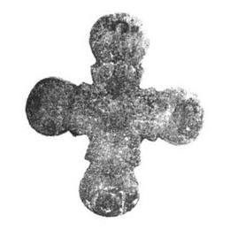

Catalog › CE-0229 · KOR2003-I.1.13
Valvă de față de cruce-encolpion cu capete rotunjite, medalioane și Răstignire
sec. prima jumătate XIII (1201–1250) · Cernovka, regiunea Cernăuți (raionul Noua Suliță), Ucraina · Centrul Bucovinean de Cercetări Arheologice (BȚAD) de pe lângă Universitatea Națională din Cernăuți „Iuri Fedkovici”, fonduri
single valve of a reliquary cross, aramă; c. prima jumătate XIII (1201–1250); found at Cernovka, regiunea Cernăuți (raionul Noua Suliță), Ucraina; kept at Centrul Bucovinean de Cercetări Arheologice (BȚAD) de pe lângă Universitatea Națională din Cernăuți „Iuri Fedkovici”, fonduri.


Identificare
- Categorie
- Valvă izolată
- Material
- Aramă
- Tehnică
- Turnare în relief; Gravare (incizie)
- Dimensiuni
- Î 60 × L 53 mm
Iconografie
- Descriere avers
- Valvă de față de cruce-encolpion cu capete rotunjite, cu medalioane marcate prin proeminențe ascuțite care formează în partea centrală a encolpionului o cruce. Imaginile sunt executate în tehnica reliefului jos. Valva este în stare proastă de conservare, imaginile sunt frecate, pe alocuri se observă urme de oxidare de la expunerea la foc. Pe marginile crucii sunt practicate găuri îngrijite (diametru 0,3 cm) în care se aflau cuie de cupru și de fier (lungime 1,7 cm) cu capete rotunde și romboidale. Latura interioară este netedă. Pe exterior, în centrul valvei, Răstignirea: figura lui Hristos cu capul ușor înclinat spre umărul drept, pe fondul traversei evidențiate a lemnului crucii. Sub mâinile Răstignitului inscripții adâncite IC NI. Pe capetele laterale rotunjite, în medalioane, se aflau evident imagini de sfinți, care acum nu se disting.
- Inscripții
- IC NI
- Limba
- Greacă
Datare și atribuire
- Datare
- sec. prima jumătate XIII (1201–1250)
- Centru
- Necunoscut
- Tipologie
- Korzukhina–Peskova 2003, tip I 1
Descoperire
- Localitate
- Cernovka
- Regiune
- regiunea Cernăuți (raionul Noua Suliță)
- Țară
- Ucraina
- Context
- Fortificație
- Anul
- 1999
Păstrare și referințe
- Colecție
- Centrul Bucovinean de Cercetări Arheologice (BȚAD) de pe lângă Universitatea Națională din Cernăuți „Iuri Fedkovici”, fonduri
- Bibliografie
- G. F. Korzukhina, A. A. Peskova, Древнерусские энколпионы. Нагрудные кресты-реликварии XI–XIII вв., Sankt-Petersburg, 2003 [Korzukhina–Peskova 2003], p. 46, cat. nr. I 1/13, reprodusă la Табл. 6 (planșe, p. 248). Bibliografie citată în sursă: Пивоваров 2000, 222, рис. 1; Пивоваров 2001, 73–74, фото 9, рис. 12; Пивоваров 2001а, 250, рис. 10.
- Figura
- Табл. 6
- Planșe
- Korzukhina–Peskova 2003, Табл. 6 (planșă fără paginație proprie în PDF; p. 248 tipărită)
- Observații
- Datare după Peskova: sec. prima jumătate XIII. Circumstanțe: Descoperit în 1999 de S. V. Pivovarov în timpul cercetării fortificației din prima jumătate a sec. XIII, în stratul superior al încăperii/careului nr. 5, direct pe platforma de luptă din piatră. Veșmântul lui Hristos nespecificat. Coordonate: nu sunt date în sursă.
Citare: Corpus Encolpiorum, CE-0229, Valvă de față de cruce-encolpion cu capete rotunjite, medalioane și Răstignire, --root/piese/KOR2003-I.1.13/ (accesat 2026-10-17).